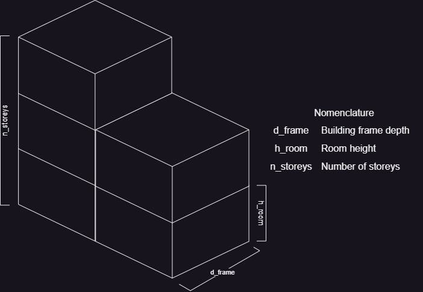
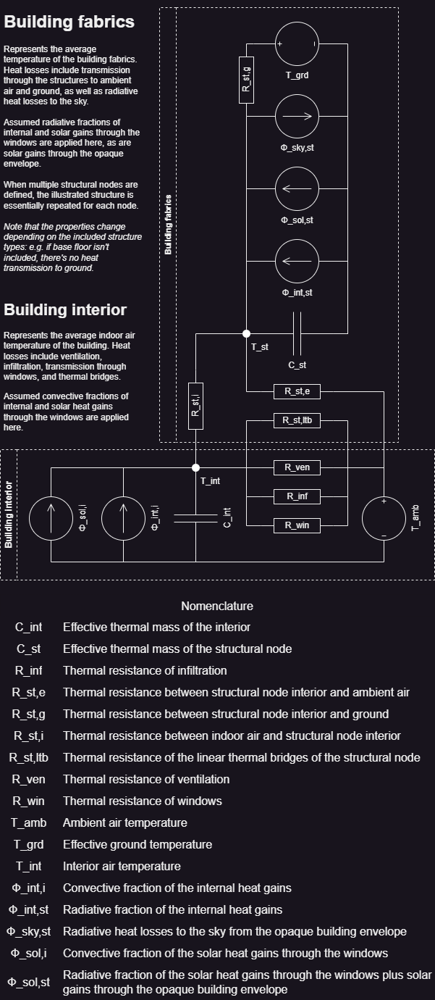

Archetype building modelling
This section aims to explain the lumped-capacitance (resistance-capacitance) modelling approach and the inherent assumptions used by this module in more detail, aimed at a more expert audience interested in the inner workings of the module. However, a lot of the techical details are not reproduced here, but instead reference the relevant docstrings in the Library section. In general, the used method is loosely based on the international standard EN ISO 52016-1:2017, and majority of the same assumptions apply.
Overall, the structure of this section more or less follows the ArchetypeBuilding constructor, as it is the key struct containing and calculating all the information necessary for modelling an archetype building. The Process ScopeData structs, Process WeatherData structs, and ArchetypeBuildingWeather.py sections already sufficiently explain the handling of the building stock statistics and weather data as input, so we'll start with Forming the building envelope instead. Next, we proceed to Preparing the building loads, namely the internal heat gains and solar heat gains for the archetype building. Then, now that we know the dimensions of the building envelope and the external loads on the building, we can proceed with Calculating the properties of the lumped-capacitance thermal nodes, as well as with Calculating the properties of the HVAC equipment. Finally, ArchetypeBuildingModel.jl also includes a very simple rule-based method for Solving the baseline heating demand and HVAC equipment consumption. While the main goal of this module is to provide input data for optimization models like Backbone or SpineOpt, having access to simple standalone baseline solutions is a quite helpful.
Forming the building envelope
The first step in creating an archetype building is forming the building envelope by calculating the dimensions of the different structures, and storing the results in a corresponding EnvelopeData struct. However, as ArchetypeBuildingModel.jl aims to remain useable on the building stock scale, the geometry of the archetype buildings is heavily simplified. The key assumptions for forming the archetype building envelope are as follows:
- The archetype buildings are assumed to be rectangular in shape, with an
average_gross_floor_area_m2_per_buildingbased on the appropriateScopeData. The shape of the envelope is assumed to be primarily determined by the following building_archetype parameters:- number_of_storeys: The assumed average number of storeys of the archetype building. In case of non-integer values, only the topmost separating floor is assumed to differ from the rest. Essentially, the
average_gross_floor_area_m2_per_buildingis divided into this many floors. - building_frame_depth_m: The assumed average depth of the archetype building. Since dwellings typically have requirements for natural light (at least in Finland), there's a limit for how deep the building frame can reasonably be when fenestrated from both sides. Naturally, this varies from building to building depending on their age and exact shape, but in general, I find it more reliable than using e.g. some assumption about the width-to-depth ratio of the buildings.
- room_height_m: The assumed average height of the rooms. In combination with the number_of_storeys, this parameter determines how tall the archetype buildings are. For simplicity, all storeys are assumed to be equally high, and non-integer number_of_storeys are rounded up for estimating the height of the building.
- number_of_storeys: The assumed average number of storeys of the archetype building. In case of non-integer values, only the topmost separating floor is assumed to differ from the rest. Essentially, the
See the ArchetypeBuildingModel.process_building_envelope docstring for a detailed explanation of how the envelope shape related parameters affect the calculations. The actual equations for the surface areas and linear thermal bridge lengths of the structures can be found from the docstrings of the dedicated functions linked therein. The geometry parameters and assumptions are illustrated below:

Preparing the building loads
The next step we need to do before we can really start forming the lumped-capacitance thermal nodes is to determine the total external heat loads for the archetype building. Essentially, this means forming the LoadsData struct, containing the total domestic hot water demand, internal heat gains, as well as solar heat gains for the building.
The total building loads for the LoadsData are calculated by the ArchetypeBuildingModel.process_building_loads function, based on the input data provided via the connected building_loads object. The calculations for the total domestic hot water demand and internal gains are extremely simple, and essentially only boil down to adding together the prodived base and gfa_scaling input data. See the ArchetypeBuildingModel.calculate_total_dhw_demand and ArchetypeBuildingModel.calculate_total_internal_heat_loads for the exact formulations.
Calculating the total solar gains for the buildings is more complicated, but it is still heavily simplified by the following key assumptions in line with the EN ISO 52016-1:2017 standard:
- Solar properties of windows as well as external shading are assumed to be independent of the solar angle.
- Surface heat transfer coefficients and apparent sky to ambient air temperature difference are approximated as time-invariant averages.
- Exterior surface of envelope structures is assumed to have negligible thermal mass for simplicity.
- For the purpose of solar heat gains, the building is assumed to aligned with the cardinal directions.
Solar gains through the windows are impacted by the window properties in ScopeData, the solar irradiation in WeatherData, the assumed window_non_perpendicularity_correction_factor, as well as the estimated external_shading_coefficient and window_area_distribution_towards_cardinal_directions. See the ArchetypeBuildingModel.calculate_total_solar_gains for the exact formulation.
Meanwhile, the solar gains through the building envelope are impacted by the exterior_resistance_m2K_W and external_U_value_to_ambient_air_W_m2K of each structure, their surface areas as recored in EnvelopeData, The assumed average_structural_solar_absorption_coefficient, the solar irradiation in WeatherData, as well as the estimated external_shading_coefficient. The radiative envelope sky heat losses are also heavily simplified, depending again on the surface properties of the structures, as well as assumed sky view factors, the assumed external_radiative_surface_heat_transfer_coefficient_W_m2K, and the assumed average_apparent_sky_temperature_difference_K. See the ArchetypeBuildingModel.calculate_total_envelope_solar_gains and ArchetypeBuildingModel.calculate_total_envelope_radiative_sky_losses, as well as the functions linked therein for the exact formulation.
Calculating the properties of the lumped-capacitance thermal nodes
Now that we have the processed EnvelopeData and LoadsData, we can finally start calculating the properties of the lumped-capacitance thermal nodes in earnest. First, the create_building_node_network function is called to form the ArchetypeBuildingModel.BuildingNodeNetwork, which is essentially a dictionary containing the processed BuildingNodeData of all the relevant thermal nodes. However, it's actually the BuildingNodeData and the ArchetypeBuildingModel.process_building_node that are of primary interest, as they contain and calculate the properties of the thermal nodes.
Because the BuildingNodeData has quite a few fields and the ArchetypeBuildingModel.process_building_node has quite a few steps, we won't be going through them thoroughly here. Instead, we'll focus on the idea behind the thermal node processing, hopefully giving you an understanding as to why and how the thermal nodes are processed the way they are. The processing of the thermal nodes relies entirely on The building_node definition, as it contains the information about which structure_types are included in the node, whether the node represents the interior air (via the interior_air_and_furniture_weight parameter), or domestic hot water demand (via the domestic_hot_water_demand_weight parameter). The procedure for calculating the properties of each lumped-capacitance thermal node goes something like this:
- Calculate the total effective thermal mass of this node by summing the effective thermal masses of the included structures and/or interior air and furniture.
- The interior air node uses the effective_thermal_capacity_of_interior_air_and_furniture_J_m2K parameter to estimate the impact of interior air and furniture.
- Calculate the total heat transfer coefficient between this node and the interior air node based on the properties and dimensions of the included structures.
- Relevant for structural nodes only.
- Calculate the total heat transfer coefficient between this node and the ambient air and/or ground.
- For structural nodes, this is again based on the properties and dimensions of the included structures.
- For the interior air node, this is includes the impact of windows, ventilation and infiltration, and thermal bridges.
- Calculate the total heat gains on this node, including internal and solar heat gains.
- The assumed convective fraction of the heat gains are applied to the interior air node, while the assumed radiative fraction of the heat gains are distributed among the structural nodes based on their relative total structural surface areas.
- Domestic hot water demand is applied as a "negative heat gain" on the domestic hot water node.
There are a few important simplifications in the above BuildingNodeData processing:
- Windows are treated separate from the rest of the structures, assumed to have negligible thermal mass, and act as a direct thermal resistance between the interior air and ambient air nodes.
- The structural nodes don't interact with each other directly, only via the interior air node.
- Essentially, there's no approximation for heat transfer at the junctions of the different structures, nor for the radiative heat transfer between structures.
- Thermal bridges are assumed to bypass the structural nodes entirely. Thus, their contribution is included in the heat transfer coefficient between the interior air node and the ambient air node.
- In principle, it would be possible to split the effect of the thermal bridges between the interior and exterior heat transfer coefficients of the structural nodes. However, treating them separately in this manner is simpler.
For readers interested in the technical details and exact formulations, please refer to the documentation of the ArchetypeBuildingModel.process_building_node function, and the functions linked therein. See the Processing thermal nodes into AbstractNodes section for how the data is adapted for use with large-scale energy system models, which also happens to simplify Solving the baseline heating demand and HVAC equipment consumption. Ultimately, the end result will look something like this:

Calculating the properties of the HVAC equipment
The properties of the HVAC equipment are based on The building_process definition, and processed into BuildingProcessData. Overall, the process is pretty simple, roughly consisting of the following steps:
- Fetch the user-defined properties of the HVAC equipment, most important of which are the input/output capacities.
- Calculate the potentially weather-dependent coefficient of performance.
For the exact formulations, see the documentation for the ArchetypeBuildingModel.process_building_system function and the functions linked therein. See the Processing HVAC equipment into AbstractProcesses section for how the data is adapted for use with large-scale energy system models, which also happens to simplify Solving the baseline heating demand and HVAC equipment consumption.
Solving the baseline heating demand and HVAC equipment consumption
While the main goal of ArchetypeBuildingModel.jl is the creation of the lumped-capacitance thermal models depicting the aggregated flexible heating/cooling demand of building stocks, it is often useful or even necessary to have a baseline heating/cooling demand available for comparison. As such, ArchetypeBuildingModel.jl includes a very simple rule-based simulation of heating and cooling of the created ArchetypeBuildings.
Storing and processing the heating/cooling demand and HVAC equipment energy consumption results are handled via the ArchetypeBuildingResults struct. The actual calculations are performed in two main steps:
- Solve initial temperatures (unless explicitly provided), node temperatures, and nodal HVAC demand using the
ArchetypeBuildingModel.solve_heating_demandfunction. - Solve the HVAC equipment consumption per process based on the above nodal demands using the
ArchetypeBuildingModel.solve_consumptionfunction.
For readers interested in the actual implementation and technical details, please refer to the documentation of the above functions, and the functions linked therein. However, there are a few things worth noting about how the heating/cooling demand and HVAC equipment consumption are solved:
- If not explicitly provided, lumped-capacitance thermal node initial temperatures are solved by starting the temperatures at their lowest permitted temperatures, and repeatedly solving the first 24-hours and replacing the initial temperatures with the ones on hour 24 until the temperatures no longer change.
- The simulation of the heating/cooling demand uses implicit Euler discretization of the lumped-capacitance thermal node energy balance equations.
- The simple rule-based controller used in determining the heating/cooling demand for the lumped-capacitance thermal nodes has the following rules:
- If the temperature of a node would increase above its permitted maximum temperature, provide just enough cooling to keep it at the maximum.
- If the temperature of a node would fall below its permitted minimum, provide just enough heating to keep it at the minimum.
- The nodal heating/cooling demand is used as-is for every building_process for determining the HVAC equipment energy consumption, regardless of potential capacity limitations.
- Essentially, when calculating the baseline HVAC equipment energy consumption, we assume that every process handles the entirety of the heating/cooling load.
- For most simple use-cases, this is fine. However, if there are e.g. multiple parallel heating or cooling processes on a node, the calculated baseline HVAC consumption isn't useful as-is. In such cases, the user needs to combine the HVAC consumption time series themselves, based on assumed operation logic of the parallel heating/cooling systems.